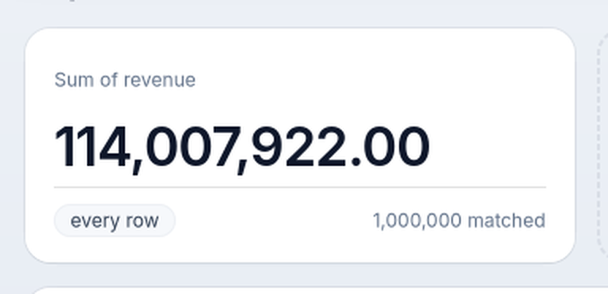
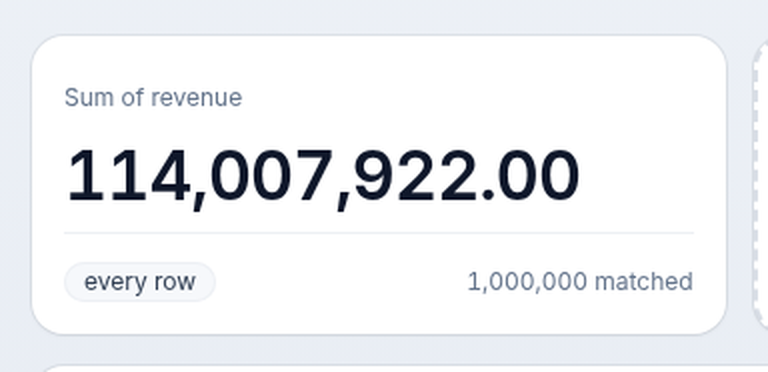
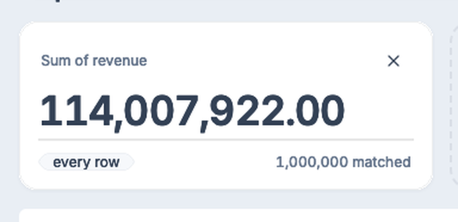
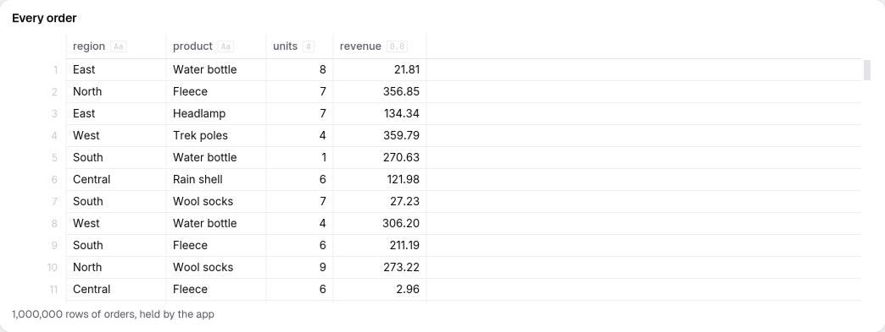
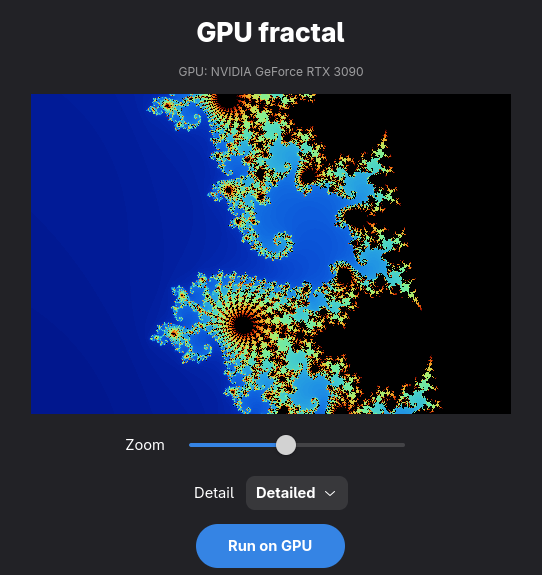
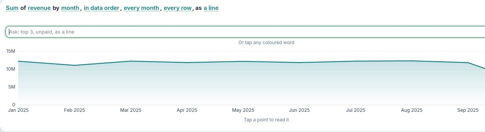

From one button
to the GPU.
omxcode is an app framework written in Mojo. One file becomes a native app on Linux, a web app, and a set of tools an AI agent can use. Start with 30 lines; end with what nothing else does.
An app, every host, a look.
Lists, data that stays, tests, components.
Agents, native AI screens, the GPU.
An app is state, update, view.
State is the struct's fields.
update runs when something happens: the button sends TAP, and update adds one.
view describes the screen from the state. omxcode works out what changed and touches only that.
There's no other file: no HTML, no layout XML, no build config.
def update(mut self, event: Event): if event.message == TAP: self.taps += 1 def view(self) -> View: return VStack( Text("Hello from Mojo", style=TITLE), Text("Tapped " + String(self.taps) + " times", style=CAPTION), Button("Tap me", on_tap=TAP, style=PROMINENT), spacing=16, )
One file. Each platform's own controls.
The same view() becomes GTK widgets on Linux, HTML on the web and AppKit views on the Mac. Not a drawn imitation: the platform's real buttons and fields.
scripts/build.sh <app> linux, web, mac: one command each.



A look is one method.
Leave theme() out and the app looks native: Adwaita on Linux.
Return liquid() and the same app wears Liquid: soft surfaces and springy motion, the same on Linux and the web.
Fluent, Omarchy and Paper ship too. A theme is plain Mojo in themes/: copy one and change it.


A list is a loop. A message carries an id.
view() builds one row per task with a plain for, so the screen is always exactly the data.
Ticking task 7 sends TICK + 7. update subtracts TICK and knows which task it was.
The tooltip says which task a Remove button is for: to a person, a screen reader and an agent.
def view(self) -> View: var rows = List[View]() var left = 0 for t in self.tasks: if not t.done: left += 1 rows.append(HStack( Checkbox(t.title, t.done, on_toggle=TICK + t.id).grow(), Button("Remove", on_tap=REMOVE + t.id).tooltip("Remove " + t.title), ).fill())
Data that stays: SQLite.
mojoui.sqlite opens a file and runs SQL, with values bound, never pasted in.
The app changes the table, then reads it back: one source of truth, so the screen and the file can't drift.
Close the app, open it again: the tasks are there.

def open_db() raises -> Database: make_dir(config_dir("tasks")) var db = Database(config_dir("tasks") + "/tasks.db") db.exec("CREATE TABLE IF NOT EXISTS tasks(id INTEGER PRIMARY KEY, title TEXT, done INTEGER)") return db^ def load(db: Database) raises -> List[Task]: var tasks = List[Task]() var q = db.prepare("SELECT id, title, done FROM tasks ORDER BY id") while q.step(): tasks.append(Task(q.int(0), q.text(1), q.int(2) == 1)) return tasks^
Test the real widgets. No window.
Every app has a test mode. Give it steps; it presses the real GTK widgets, prints what each one shows, and quits.
scripts/drive.py runs the same steps in a browser with no window and prints the same lines. Same lines, same behaviour.
MOJOUI_TEST="type:What needs doing?=Buy milk;tap:Add;\
type:What needs doing?=Call Ada;submit:What needs doing?;\
toggle:Buy milk" build/tasks/linux/tasks
LABEL: Tasks
FIELD:
BUTTON: Add
CHECK: Buy milk=on
BUTTON: Remove
CHECK: Call Ada=off
BUTTON: Remove
LABEL: 1 leftComponents that drop in.
Buttons and fields, and also data grids, charts, maps, timelines, video and a GPU canvas: each one a function that returns a View.
A matrix generated from the code says which run where, on each platform and through the agent: components.
The rule: anything one app needs that another would too goes into the framework, with its own test.

Every app is already an agent's tool set.
GTK turns the view into widgets; the web, into HTML. The agent host turns it into MCP tools. No per-app code.
A field becomes a tool that takes text; a checkbox, one that takes on. Each reply says what changed, in words: no screenshots, no coordinates.
scripts/agent.sh tasks prints the one command that gives it to Claude Code.
what-needs-doing text="Buy milk" submit=true Did what-needs-doing. Now: 1 left Tools now 4; new: buy-milk, remove what-needs-doing text="Call Ada" submit=true Did what-needs-doing. Now: 2 left Tools now 6; new: call-ada, remove-2 screen Checkbox "Buy milk" = off → buy-milk Button "Remove" (Remove Buy milk) → remove Checkbox "Call Ada" = off → call-ada Button "Remove" (Remove Call Ada) → remove-2
The screen is the permission model.
An agent can do nothing a person couldn't. A disabled button is no tool. A dialog's buttons are tools only while it's open.
Tools appear and go as the screen changes, and the agent is told which.
A call without a value it needs is refused, never guessed.
buy-milk ValueError: buy-milk needs "on" buy-milk on=true Did buy-milk. Now: 1 left
Agents answer with native screens.
The other direction: an omxcode app is an AG-UI client. An agent answers with a screen as data, built from 38 of the framework's components.
The app checks it against the catalog and draws it with real widgets. No HTML, no code from the agent; anything outside the catalog is refused, and the agent is told why.
Checked against Pydantic AI and LangGraph.

The screen builds while it streams.
The agent's JSON arrives in pieces. A tolerant reader parses whatever has arrived, and the screen grows piece by piece; parts not here yet show a skeleton.
Its thinking shows live, then folds away. Approvals wait for a person; the answer goes back to the agent.


A million rows, and the agent never sends them.
The agent names a dataset the app already holds; the app binds a grid or a chart to it.
The rows stay in the app's memory, queried by its own engine, and never travel through the agent's messages.
Pictures work the same way: the agent names one the app registered. It never sends pixels or links.

An agent in the app's own process.
A LocalAgent is any Mojo struct that answers a run with AG-UI events. No HTTP, no other language, no server to start.
Its events go through the same handler a streamed reply does, so a local model and a remote agent build the same screens.
trait LocalAgent: """An agent in the app's own process (goal 48 M5): no HTTP, no other language. Given a run's input (the same RunAgentInput JSON a remote agent gets) it answers with AG-UI events, as JSON, in order; the app reads them with the same handler a stream's pieces go through (Agent.run_local, or mojoui.agentchat's AgentChat.feed).""" def respond(mut self, input: String) -> List[String]: ...
The GPU code is in the same file.
This function colours one pixel. self.gpu.render[mandelbrot](…) runs it on the GPU, one thread per pixel, and the result goes straight into an Image on screen.
The same function can also run on the CPU, and the app checks that the two pictures agree, pixel for pixel.

def mandelbrot(x: Int, y: Int, w: Int, h: Int, p: Params) -> UInt32: """Colour of one pixel. p = (scale, centre x, centre y, max iterations).""" var cx = p[1] + (Float32(x) - Float32(w) / 2) * p[0] / Float32(h) var cy = p[2] + (Float32(y) - Float32(h) / 2) * p[0] / Float32(h) var zx = Float32(0) var zy = Float32(0) var i = 0 var limit = Int(p[3]) while i < limit and zx * zx + zy * zy < 4.0: var t = zx * zx - zy * zy + cx zy = 2.0 * zx * zy + cy zx = t i += 1
The sentence is the interface.
In omxplorer a chart's title is the chart: Sum of revenue by month, … as a line. Tap a word to change it, or type “by product, largest first, top 5”. A person, a keyboard and an agent edit the same sentence.

It doesn't hang. By design.
update() and view() only decide. Anything slow is a request, a timer or a job: it runs on another thread and comes back to update() as an ordinary event.
The app's state is only touched on the UI thread: no locks and no races in app code.
Five rules, for a person or an agent writing an app: docs/ui-threads.md.
What runs today.
| Linux (GTK 4) | runs, checked by scripts/check |
|---|---|
| The web | runs, checked in Chromium by scripts/check |
| Agents (MCP, AG-UI) | run, checked; AG-UI against Pydantic AI and LangGraph |
| Mac (AppKit) | builds; runs on GitHub's macOS machines; wide screens overflow (open) |
| Android | runs on the emulator |
| iPhone | builds, not run yet |
| Windows | waits for Mojo itself |
Start here: your first app, then a todo app.